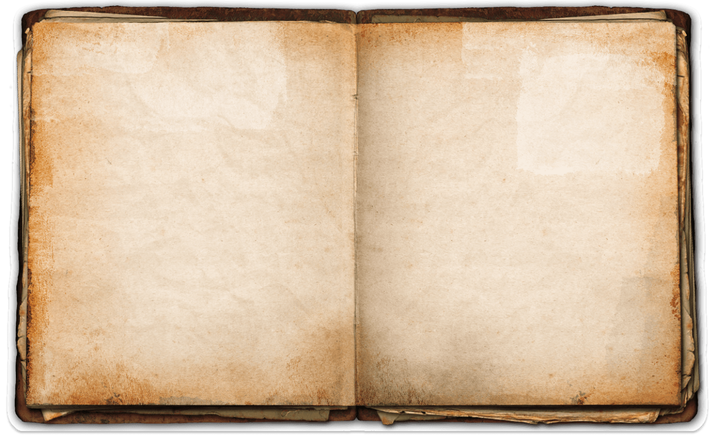
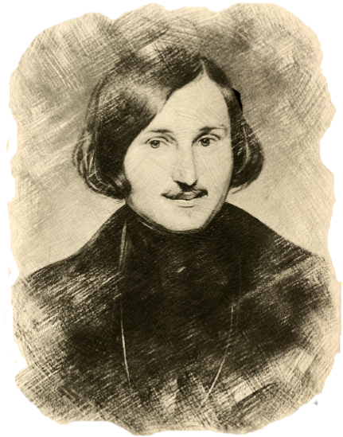

Ф. А. Моллер. Портрет Гоголя (Третьяковская галерея, 1841 г.).
“История средних веков менее всего может назваться скучною. Нигде нет такой пестроты, такого живого действия, таких резких противоположностей, такой странной яркости, как в ней: ее можно сравнить с огромным строением,
в фундаменте которого улегся свежий, крепкий, как вечность, гранит, а толстые стены выведены из различного, старого и нового материала, так что на одном кирпиче видны готфские руны, на другом блестит римская позолота; арабская резьба, греческий
карниз, готическое окно, – все слепилось в нем и составило самую пеструю башню”
(Н. В. Гоголь, “О средних веках”)